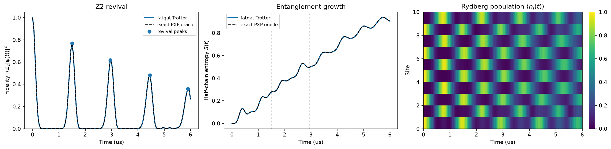

Revivals and entanglement growth in an open PXP chain¶
-
Track
Neutral-atom physics
-
Downloads
Push the Rydberg blockade to its strong-coupling extreme and you are left with the PXP model, and quenching it from the Neel state produces one of the strangest sights in many-body physics.
You would expect a ten-site chain to scramble and forget where it started. The PXP chain, for the most part, does exactly that -- except when it starts from \(|Z_2\rangle = |r\,g\,r\,g\,\ldots\rangle\). That state keeps snapping back to itself at regular intervals, a phenomenon tied to quantum many-body scars (see Turner et al., Nature Physics 14, 745 (2018)). Entanglement grows during the quench, but it is not a one-way street either: every revival comes with a visible dip in the half-chain entropy.
One practical wrinkle: fatqat's pulse emulators always start from the
all-ground state and only offer global controls, so they cannot host a quench
from \(|Z_2\rangle\). The workaround below is to Trotterize the PXP
Hamiltonian into small custom gates and run them on the gate-level simulator,
which does accept an arbitrary initial_state. An independent QuTiP solve
of the exact PXP model checks every curve along the way.
1. Where PXP comes from: the blockade limit of the Rydberg Hamiltonian¶
Start from the Rydberg Hamiltonian,
Now crank \(U\) up and set \(\Delta=0\). Once two neighbouring excitations cost more energy than anything else in the problem, "no two neighbours both in \(|r\rangle\)" stops being a preference and becomes a hard rule. Inside that constrained subspace, first-order perturbation theory leaves
with open boundaries, meaning \(P_{-1}=P_L=1\). Read each term out loud: site \(i\) may flip, but only while both of its neighbours sit in \(|g\rangle\). The bulk terms involve three sites; the two boundary terms, \(X_0 P_1\) and \(P_{L-2}X_{L-1}\), only two.
A word on scope: this is an ideal model study. The constraint is imposed exactly (not approximated by a big-but-finite \(U\)), and there is no decoherence and no atom loss.
2. The Z2 state and why it revives¶
Two Neel configurations live inside the constrained subspace,
We prepare \(|Z_2\rangle\), let it go, and watch the return probability \(F(t)=|\langle Z_2|\psi(t)\rangle|^2\). A handful of special scarred eigenstates dominate this quench, so \(F(t)\) oscillates with a period near \(T\approx 4.7/g\), where \(g=\Omega/2\) is the PXP coefficient. For the drive used below that means \(T\approx 1.5\) us -- but rather than trusting the estimate, we will simply measure where the peaks actually land.
Imports, constants, and the Z2 vector¶
Ten sites, working in rad/us and us units, and the familiar drive scale \(\Omega=2\pi\) rad/us, so the PXP coefficient is \(g=\pi\) rad/us. One convention to keep straight: FATQAT stores the amplitude of \(|b_0\ldots b_9\rangle\) at index \(\sum_i b_i 2^{N-1-i}\) (site 0 is the most significant bit), so each Neel state is a single basis vector -- just two index numbers to remember.
import matplotlib.pyplot as plt
import numpy as np
from scipy.signal import argrelextrema
import fatqat as fq
NUM_SITES = 10
HALF = NUM_SITES // 2
DIM = 2**NUM_SITES
OMEGA = 2 * np.pi # rad/us -> PXP coefficient g = OMEGA / 2
T_MAX = 6.0 # us, covers the first three revivals
DT_TROTTER = 0.01 # us, one symmetric second-order Trotter step
TIME_GRID = np.linspace(0.0, T_MAX, 121)
Z2_BITS = tuple(1 - (i % 2) for i in range(NUM_SITES)) # |r g r g ...>
Z2_INDEX = sum(2 ** (NUM_SITES - 1 - i) for i in range(NUM_SITES) if Z2_BITS[i])
Z2 = np.zeros(DIM, dtype=complex)
Z2[Z2_INDEX] = 1.0
ALT_BITS = tuple(1 - bit for bit in Z2_BITS) # the twin Neel branch
ALT_INDEX = sum(2 ** (NUM_SITES - 1 - i) for i in range(NUM_SITES) if ALT_BITS[i])
ALT = np.zeros(DIM, dtype=complex)
ALT[ALT_INDEX] = 1.0
print(f"Z2 branch |r g r g ...> sits at statevector index {Z2_INDEX}")
print(f"twin branch |g r g r ...> sits at statevector index {ALT_INDEX}")
Runtime result
Z2 branch |r g r g ...> sits at statevector index 682
twin branch |g r g r ...> sits at statevector index 341
3. Trotterizing PXP into a fatqat program¶
Two constraints decided the approach. First, the pulse emulators always
start from \(|g\ldots g\rangle\) and only offer global controls, so a
quench from \(|Z_2\rangle\) is simply not expressible there; the
gate-level Simulator, on the other hand, happily
accepts an initial_state. Second, no native gate set contains a PXP
term -- but that is exactly what fatqat's custom-operation extension point
is for: MatrixImplementationMap resolves any
fixed-arity operation family to a local matrix at execution time.
The exponentials we need are easy to write down. With \(M=PXP\) and \(M^2=P\otimes I\otimes P\),
Concretely, that is a \(2\times 2\) rotation between \(|ggg\rangle\) and \(|grg\rangle\) for a bulk term, and between \(|gg\rangle\) and \(|rg\rangle\) (left edge) or \(|gg\rangle\) and \(|gr\rangle\) (right edge) for the boundary terms. Each matrix is built once, checked to be unitary, and registered under its operation class.
Now for the actual time evolution. We want \(e^{-iH_{\mathrm{PXP}}dt}\), where \(H_{\mathrm{PXP}}=\sum_j h_j\) with \(h_j=(\Omega/2)M_j\). The \(h_j\)'s do not commute, so the exponential does not factor into a product of the individual \(e^{-ih_j dt}\)'s -- it has to be approximated. The first-order Trotter formula just sweeps the terms once,
and its leading error is a commutator of the \(h_j\)'s. A symmetric (Strang) step removes that leading error: split every term into two half angles, sweep forward, then sweep the same half angles backward,
In code, the forward pass is for site in range(NUM_SITES) -- left edge,
then the bulk terms, then the right edge -- and the backward pass is the
same loop in reverse. Each half-step exponent is \(h_j\,dt/2\), and
\(h_j\) already carries \(\Omega/2\), so every registered matrix
uses the one angle \(\theta=\Omega\,dt/4\). Repeating this symmetric
step round(duration / dt) times walks the quench out to durations that
are integer multiples of dt.
A small warning from experience: when fatqat flattens a local matrix, the FIRST target is the most significant bit -- index \(b_{t_0}\cdot 2^{k-1} + \cdots + b_{t_{k-1}}\). It is easy to get this backwards (we did), and the result is silently wrong dynamics rather than an error message.
from dataclasses import dataclass
from typing import ClassVar
from fatqat.operations import Operation
THETA = OMEGA * DT_TROTTER / 4
@dataclass(frozen=True)
class PXPBulk(Operation):
"""Three-site PXP exponential: X on the middle site guarded by two P's."""
name: ClassVar[str] = "PXPBulk"
num_subsystems: ClassVar[int] = 3
@dataclass(frozen=True)
class PXPEdgeLeft(Operation):
"""Left boundary term X_0 P_1."""
name: ClassVar[str] = "PXPEdgeLeft"
num_subsystems: ClassVar[int] = 2
@dataclass(frozen=True)
class PXPEdgeRight(Operation):
"""Right boundary term P_{L-2} X_{L-1}."""
name: ClassVar[str] = "PXPEdgeRight"
num_subsystems: ClassVar[int] = 2
def _rotation_matrix(dimension: int, pair: tuple[int, int], angle: float) -> np.ndarray:
"""Identity except for a 2x2 exp(-i angle X) rotation on ``pair``."""
matrix = np.eye(dimension, dtype=complex)
first, second = pair
matrix[first, first] = matrix[second, second] = np.cos(angle)
matrix[first, second] = matrix[second, first] = -1j * np.sin(angle)
return matrix
# fatqat flattens local matrices with the FIRST target as the most
# significant bit: index = b_{t0} * 2**(k-1) + ... + b_{t_{k-1}}.
# Keep that in mind or the edge terms quietly act on the wrong site.
# Bulk (i-1, i, i+1): flip the middle site -> pair (|ggg>, |grg>) = (0, 2).
BULK_MATRIX = _rotation_matrix(8, (0, 2), THETA)
# Left edge (0, 1): flip site 0 -> pair (|gg>, |rg>) = (0, 2).
EDGE_LEFT_MATRIX = _rotation_matrix(4, (0, 2), THETA)
# Right edge (L-2, L-1): flip site L-1 -> pair (|gg>, |gr>) = (0, 1).
EDGE_RIGHT_MATRIX = _rotation_matrix(4, (0, 1), THETA)
implementation_map = fq.implementation.MatrixImplementationMap()
implementation_map.add(PXPBulk, BULK_MATRIX)
implementation_map.add(PXPEdgeLeft, EDGE_LEFT_MATRIX)
implementation_map.add(PXPEdgeRight, EDGE_RIGHT_MATRIX)
# Use NumPy to avoid compilation startup in this small example.
backend = fq.simulator.Simulator(
method="SV",
runtime="numpy",
implementation_map=implementation_map,
)
def trotter_program(duration: float) -> fq.Program:
"""Build the symmetric second-order Trotter program for ``duration``."""
steps = int(round(duration / DT_TROTTER))
program = fq.Program(NUM_SITES)
for _ in range(steps):
for site in range(NUM_SITES): # forward half pass
if site == 0:
program.add(PXPEdgeLeft(), (0, 1))
elif site == NUM_SITES - 1:
program.add(PXPEdgeRight(), (NUM_SITES - 2, NUM_SITES - 1))
else:
program.add(PXPBulk(), (site - 1, site, site + 1))
for site in range(NUM_SITES - 1, -1, -1): # backward half pass
if site == 0:
program.add(PXPEdgeLeft(), (0, 1))
elif site == NUM_SITES - 1:
program.add(PXPEdgeRight(), (NUM_SITES - 2, NUM_SITES - 1))
else:
program.add(PXPBulk(), (site - 1, site, site + 1))
return program
4. The exact oracle¶
Never trust a hand-built Trotter circuit without a second opinion. fatqat's own physics tests check numerics against an independent oracle, so we do the same here: assemble the exact PXP Hamiltonian directly with QuTiP and solve it once over the whole time grid, starting from the same \(|Z_2\rangle\) vector.
import qutip
_P = (qutip.qeye(2) + qutip.sigmaz()) / 2 # |g><g|
_X = qutip.sigmax()
_I2 = qutip.qeye(2)
def _pxp_term(site: int) -> "qutip.Qobj":
factors = [_I2] * NUM_SITES
factors[site] = _X
if site - 1 >= 0:
factors[site - 1] = _P
if site + 1 < NUM_SITES:
factors[site + 1] = _P
return qutip.tensor(*factors)
ORACLE_H = sum((OMEGA / 2) * _pxp_term(site) for site in range(NUM_SITES))
ORACLE_Z2 = qutip.tensor(*[qutip.basis(2, bit) for bit in Z2_BITS])
ORACLE_RESULT = qutip.sesolve(ORACLE_H, ORACLE_Z2, list(TIME_GRID))
def evolve_oracle(index: int) -> np.ndarray:
"""Return one QuTiP statevector."""
return np.asarray(ORACLE_RESULT.states[index].full()).reshape(-1)
5. What to measure: fidelity and half-chain entropy¶
Two numbers tell the whole story. The fidelity \(F(t)=|\langle Z_2|\psi(t)\rangle|^2\) says how much of the state comes back, and the fidelity to the twin branch tells us whether a revival lands on the same Neel orientation or the mirrored one. The half-chain von Neumann entropy
with \(A\) the first five sites, tracks how entangled the two halves get. Both curves come from the same small helpers, so the fatqat and oracle numbers are directly comparable.
def fidelity(state: np.ndarray, reference: np.ndarray) -> float:
"""Return |<reference|state>|^2 for two statevectors."""
return float(abs(np.vdot(reference, state)) ** 2)
def half_chain_entropy(state: np.ndarray) -> float:
"""Von Neumann entropy of the first-half subsystem, via the SVD."""
schmidt = np.linalg.svd(state.reshape(2**HALF, 2**HALF), compute_uv=False)
probabilities = schmidt**2
probabilities = probabilities[probabilities > 0.0]
return -float(np.sum(probabilities * np.log(probabilities)))
def site_occupations(state: np.ndarray) -> np.ndarray:
"""Marginal |r> population of every site from one statevector."""
basis_indices = np.arange(DIM)
return np.array(
[
float(
np.sum(
np.abs(state) ** 2
* ((basis_indices >> (NUM_SITES - 1 - site)) & 1)
)
)
for site in range(NUM_SITES)
]
)
6. Run the quench and collect the time series¶
Build one Trotter program for the interval between samples. Starting from
\(|Z_2\rangle\), pass each final state into the next run through
initial_state. For this noiseless, time-independent quench, a uniform,
Trotter-aligned grid gives the same ordered evolution at each sample as
restarting from the initial state.
def evolve_states(
initial_state: np.ndarray,
program: fq.Program,
num_steps: int,
*,
backend: fq.simulator.Simulator,
) -> list[np.ndarray]:
"""Return the initial state and a snapshot after each program application.
Each application advances one sampling interval. The returned num_steps + 1
arrays are independent copies; initial_state is not modified.
"""
if num_steps < 0:
raise ValueError("num_steps must be non-negative")
states = [initial_state.copy()]
for _ in range(num_steps):
result = backend.run(
program,
initial_state=states[-1],
result_config={"counts": False, "final_state": True},
).result()
states.append(result.get_statevector().copy())
return states
# The uniform grid samples every 0.05 us: five Trotter steps per interval.
sample_dt = TIME_GRID[1] - TIME_GRID[0]
interval_program = trotter_program(sample_dt)
fatqat_states = evolve_states(
Z2, interval_program, num_steps=len(TIME_GRID) - 1, backend=backend
)
fatqat_fidelity = np.array([fidelity(s, Z2) for s in fatqat_states])
fatqat_alt = np.array([fidelity(s, ALT) for s in fatqat_states])
fatqat_entropy = np.array([half_chain_entropy(s) for s in fatqat_states])
fatqat_occupations = np.array([site_occupations(s) for s in fatqat_states])
oracle_fidelity = np.array(
[fidelity(evolve_oracle(i), Z2) for i in range(len(TIME_GRID))]
)
oracle_entropy = np.array(
[half_chain_entropy(evolve_oracle(i)) for i in range(len(TIME_GRID))]
)
max_gap = float(np.max(np.abs(fatqat_fidelity - oracle_fidelity)))
print(f"Largest fidelity gap between Trotter and oracle: {max_gap:.5f}")
Runtime result
Largest fidelity gap between Trotter and oracle: 0.00059
Revival peaks are just local maxima of the fidelity after the initial decay. Notice that each peak lands on the same Neel branch -- the twin-branch fidelity stays negligible there, so the state really does come back to where it started.
peaks = argrelextrema(fatqat_fidelity, np.greater, order=4)[0]
peaks = [p for p in peaks if TIME_GRID[p] > 0.2 and fatqat_fidelity[p] > 0.2]
print("\nRevivals of the |Z2> quench (fatqat Trotter):")
print(f"{'time (us)':>10} {'F(Z2)':>8} {'F(alt)':>8} {'S(t)':>8}")
for p in peaks[:4]:
print(
f"{TIME_GRID[p]:>10.2f} {fatqat_fidelity[p]:>8.3f} "
f"{fatqat_alt[p]:>8.3f} {fatqat_entropy[p]:>8.3f}"
)
first_peak_time = TIME_GRID[peaks[0]]
first_peak_fidelity = fatqat_fidelity[peaks[0]]
first_peak_entropy = fatqat_entropy[peaks[0]]
print(f"Entropy maximum: {fatqat_entropy.max():.3f}")
Runtime result
Revivals of the |Z2> quench (fatqat Trotter):
time (us) F(Z2) F(alt) S(t)
1.50 0.768 0.000 0.278
2.95 0.618 0.000 0.496
4.45 0.482 0.007 0.753
5.90 0.359 0.005 0.918
Entropy maximum: 0.938
7. Read the revival and the entropy growth¶
The left panel is the money plot: three revivals around \(t\approx 1.5, 3.0, 4.5\) us, each a little weaker than the last -- the fingerprint of PXP scars. The middle panel shows why these dynamics are not thermal: the half-chain entropy grows, but it dips at every revival, as if the state briefly remembered how to be a product state again. The right panel tells the same story in real space, with the Neel stripes melting during the quench and partially reassembling each time the fidelity peaks.
figure, (fid_axis, ent_axis, occ_axis) = plt.subplots(1, 3, figsize=(16, 4))
fid_axis.plot(
TIME_GRID,
fatqat_fidelity,
label="fatqat Trotter",
linewidth=2,
)
fid_axis.plot(TIME_GRID, oracle_fidelity, "k--", label="exact PXP oracle")
fid_axis.scatter(
TIME_GRID[peaks],
fatqat_fidelity[peaks],
color="C0",
marker="o",
zorder=3,
label="revival peaks",
)
fid_axis.set(
xlabel="Time (us)",
ylabel=r"Fidelity $|\langle Z_2|\psi(t)\rangle|^2$",
ylim=(0, 1.05),
title="Z2 revival",
)
fid_axis.legend(fontsize="small")
ent_axis.plot(TIME_GRID, fatqat_entropy, label="fatqat Trotter", linewidth=2)
ent_axis.plot(TIME_GRID, oracle_entropy, "k--", label="exact PXP oracle")
for p in peaks[:3]:
ent_axis.axvline(TIME_GRID[p], color="0.8", linestyle=":", linewidth=1)
ent_axis.set(
xlabel="Time (us)",
ylabel=r"Half-chain entropy $S(t)$",
title="Entanglement growth",
)
ent_axis.legend(fontsize="small")
image = occ_axis.imshow(
fatqat_occupations.T,
aspect="auto",
origin="lower",
extent=(TIME_GRID[0], TIME_GRID[-1], 0, NUM_SITES),
cmap="viridis",
)
occ_axis.set(
xlabel="Time (us)",
ylabel="Site",
title=r"Rydberg population $\langle n_i(t)\rangle$",
)
figure.colorbar(image, ax=occ_axis, fraction=0.046, pad=0.04)
figure.tight_layout()
plt.show()
Runtime result
